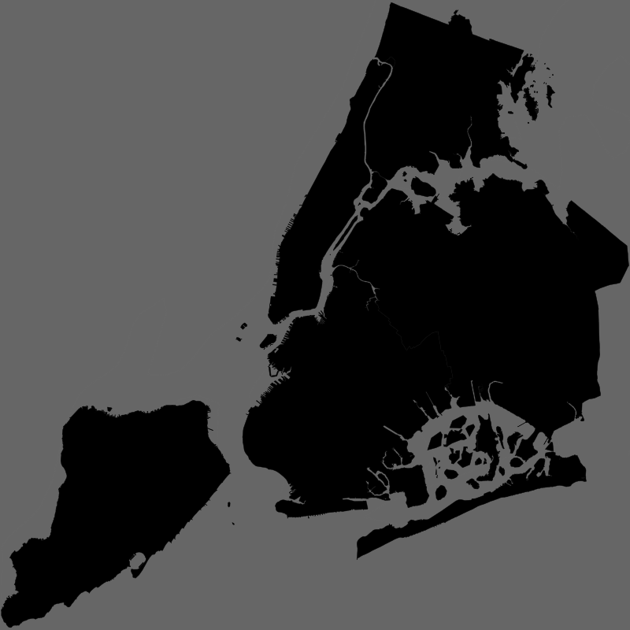

Now we have done a lot with Processing.
But we've only really been working in screen (or paper) space.

If we have a background with a projection Library, we can then put points on a map.
Or read up on via the web or online course.
Q: But remind me why to use Processing for mapping?
A: Because it is extremely powerful, for both 2D and 3D graphics.